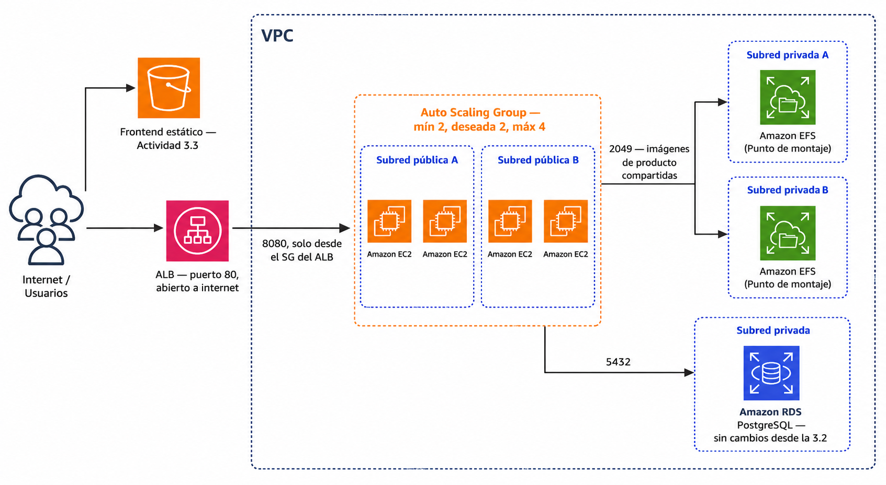

🧪 Actividad 4.1: Balanceador de carga y Auto Scaling Group¶
Descarga la plantilla
Descarga los recursos
📦 Recursos de la Actividad 4.1 — los dos scripts de arranque que necesitas hoy. El escaparate.war lo reutilizas de la Actividad 3.2, no vuelve a bajarse aquí.
Contexto¶
Escaparate ha vivido hasta ahora sobre una única instancia: si se caía, se caía el catálogo entero — es justo el primer punto único de fallo que has anotado en la tabla de la Actividad 3.3. Hoy lo eliminas de verdad: conviertes esa instancia suelta en una imagen propia, la empaquetas en una plantilla de lanzamiento, y pones un grupo de escalado automático detrás de un balanceador para que Escaparate viva en varias copias a la vez, repuestas solas si una falla.

Con varias réplicas a la vez aparece un problema nuevo que con una sola instancia no existía: las imágenes de producto se guardaban en el disco local de esa única instancia (FileSystemStorage), así que un producto subido a una réplica "desaparece" cuando lo sirve otra. Hoy lo resuelves montando EFS en todas las instancias, sin cambiar una sola línea de Escaparate — para Java, EFS es simplemente una carpeta más.
Qué vas a practicar¶
- Crear tu propia imagen (AMI) de Escaparate y empaquetarla en una plantilla de lanzamiento.
- Configurar un Application Load Balancer con su grupo de destino y comprobación de salud.
- Crear un grupo de escalado automático con capacidad mínima, deseada y máxima, y una política de escalado por CPU.
- Escribir un script de datos de usuario que obtiene las credenciales de la base de datos por CLI en cada arranque — no en la imagen, no a mano.
- Compartir las imágenes de producto entre réplicas montando EFS, sin tocar el código de Escaparate.
- Provocar el fallo de una instancia a propósito y medir cuánto tarda el grupo en reponerla y en escalar de verdad.
- Comparar el escalado horizontal automático con un escalado vertical manual, midiendo el corte de servicio real que exige cada uno.
Requisitos previos¶
La base de datos RDS de la Actividad 3.2 (el Paso 0 te indica cómo continuar, tanto si la has destruido como si solo la has detenido) y el bucket S3 del frontend de la Actividad 3.3 (sigue sirviendo el mismo catálogo, solo cambia a qué backend apunta). El escaparate.war de los recursos de la 3.2. Los apuntes de esta sesión — «Balanceo de carga y escalado automático».
No vas a programar nada de Escaparate
Como en toda la sesión anterior, hoy trabajas en infraestructura: cómo se lanza cada instancia, quién puede hablar con quién, y de dónde saca su configuración. El código no cambia.
Parte A — De instancia suelta a flota con balanceo y escalado (guiada)¶
Paso 0 — Prepara la red y la base de datos¶
Redespliega la red de Terraform si la has destruido al cerrar la 3.3 (mismo comando de siempre desde recursos/tema3/red-base).
Si has recreado la red, se pierde la regla del puerto 8080
La regla que abriste en el security_group_id de Terraform para el puerto 8080 (Paso 5 de la 3.2) la añadiste a mano por CLI o consola —Terraform no la gestiona, así que si destruyes y vuelves a desplegar la red, el grupo de seguridad nace limpio, sin ella—. Si más adelante, en el reto de escalado vertical de esta misma actividad, el curl contra la instancia suelta del Paso 1 se queda siempre en 000 aunque la aplicación esté arrancada y escuchando por dentro, es casi seguro que sea esto. Compruébalo y vuelve a abrirla si hace falta:
Con la base de datos RDS, lo que hagas depende de qué dejaste al cerrar la 3.3:
- Si solo la detuviste (no la destruiste): arráncala desde la consola (Acciones → Comenzar) y sigue con el mismo endpoint y el mismo modo de credenciales que ya tenía. Si en su día hiciste el reto de la réplica de lectura de la 3.2, esta RDS seguirá en modo autoadministrado — tenlo presente para el reto de escalado vertical de esta misma actividad, más adelante.
- Si la destruiste del todo: recréala repitiendo el Paso 2 de la Actividad 3.2 tal cual — mismo identificador
escaparate-db-<tu-identificador>, mismas opciones. Al nacer de nuevo, vuelve a tener credenciales gestionadas por Secrets Manager, como la primera vez.
Cuando esté available, carga el esquema y los datos de ejemplo (Paso 5 de la 3.2, con 01-schema.sql y 02-data.sql de los recursos de aquella actividad).
Comprueba: que tienes vpc_id, subnet_publica_a_id, subnet_publica_b_id, subnet_privada_a_id, subnet_privada_b_id y security_group_id de Terraform anotados, y tu instancia RDS en available.
Paso 1 — Prepara una instancia base y captúrala como AMI propia¶
Lanza una instancia t3.small en tu subred pública, con el security_group_id de Terraform y el perfil de instancia LabInstanceProfile, usando como datos de usuario recursos/tema4/actividad_4_1/preparar-imagen.sh (de los recursos de hoy) — instala Java 21, el cliente de PostgreSQL y amazon-efs-utils (el paquete que sabe montar sistemas de ficheros EFS), sin arrancar todavía ninguna aplicación.
Cuando la instancia esté lista, sube escaparate.war con el mismo mecanismo de clave temporal de la 3.2:
Si ya tenías una tempkey de una sesión anterior
ssh-keygen se para a preguntar Overwrite (y/n)? si el fichero ya existe — y si pegas los tres comandos juntos de golpe, esa pregunta se traga la primera línea del siguiente comando en vez de tu respuesta, y todo falla en cadena (incluido el scp, con Permission denied, porque la clave nunca llegó a regenerarse). Borra la clave vieja primero para que no pregunte nada:
| Bash | |
|---|---|
Conéctate y comprueba que todo está en orden:
Con la instancia lista, captúrala como imagen propia — mismo procedimiento que en la Actividad 2.3:
- Instancias → selecciona la tuya → Acciones → Imagen y plantillas → Crear imagen.
- Nómbrala
escaparate-ami-<tu-identificador>. - Crea la imagen y espera a que pase de
pendingaavailableen AMIs.
Comprueba: que java -version muestra Java 21, que escaparate.war está en el home del ec2-user, y que tu AMI aparece available.
Captura: la salida de java -version y ls ~/escaparate.war en la instancia, y tu AMI en estado available con su ID visible.
Paso 2 — Crea el sistema de ficheros EFS compartido¶
- Busca "EFS" en el buscador de servicios → Crear sistema de archivos.
- Nómbralo
escaparate-efs-<tu-identificador>, elige tu VPC de Terraform, y dentro de Configuración de red personalizada añade un punto de montaje en cada una de tus dos subredes privadas (subnet_privada_a_idysubnet_privada_b_id), con elsecurity_group_idde Terraform en ambos — el grupo de seguridad de Terraform ya trae la regla interna que permite el puerto 2049 (NFS) entre instancias del mismo grupo, así que no hace falta abrir nada nuevo. - Crea el sistema de archivos y anota su ID de sistema de archivos (
fs-...).
Comprueba: que el sistema de archivos aparece available, con un punto de montaje por subred privada, en estado available cada uno.
Captura: el sistema de archivos EFS con sus dos puntos de montaje, mostrando el ID de sistema de archivos.
Paso 3 — Crea el grupo de seguridad de las instancias y del balanceador¶
Hasta ahora el puerto 8080 de Escaparate estaba abierto a 0.0.0.0/0 (herencia de la 3.2/3.3). Con un balanceador delante, eso deja de tener sentido — solo el balanceador debe poder hablar con las instancias.
- Crea un grupo de seguridad
escaparate-alb-sg-<tu-identificador>en tu VPC, con una única regla de entrada: puerto 80, origen0.0.0.0/0— es el único punto de la arquitectura que sigue abierto a cualquiera, y es exactamente lo que un balanceador está pensado para ser. - Crea un segundo grupo de seguridad
escaparate-app-sg-<tu-identificador>, con una única regla de entrada: puerto 8080, origen el grupo de seguridadescaparate-alb-sg-<tu-identificador>que acabas de crear — no una IP, no0.0.0.0/0. - Añade una regla de salida en
escaparate-alb-sg: puerto 8080, destino el grupo de seguridadescaparate-app-sg-<tu-identificador>que acabas de crear. No des por hecho que la regla de salida por defecto del grupo vale tal cual —dependiendo de cómo lo hayas creado, puede venir ya restringida solo al puerto 80, calcada de la regla de entrada—, así que revísala y añade esta explícitamente si no está. El motivo: el balanceador y su propio grupo de seguridad tienen que poder salir por el puerto 8080, no solo por el 80: el navegador habla con el ALB por el 80, pero el ALB habla con las instancias por el 8080, y son dos conexiones distintas con dos puertos distintos. Si la salida se queda restringida al 80, el balanceador nunca llega a alcanzar las instancias y el grupo de destino se queda enTarget.Timeoutpara siempre, aunque todo lo demás esté bien configurado.
Comprueba: que escaparate-app-sg tiene como origen de su única regla el propio escaparate-alb-sg, no un rango de IPs; y que escaparate-alb-sg tiene una regla de salida explícita al puerto 8080 con destino escaparate-app-sg.
Captura: las dos reglas de entrada, cada una en su grupo de seguridad, mostrando el origen exacto de cada una, y la regla de salida de escaparate-alb-sg.
Paso 4 — Crea el grupo de destino y el balanceador¶
- EC2 → Grupos de destino → Crear grupo de destino. Tipo de destino: Instancias. Protocolo HTTP, puerto 8080, tu VPC. En Comprobaciones de salud, ruta
/api/salud/listo. Nómbraloescaparate-tg-<tu-identificador>. No registres ninguna instancia todavía — el grupo de escalado automático lo hará solo en el Paso 6. - EC2 → Balanceadores de carga → Crear balanceador de carga → Application Load Balancer. Nómbralo
escaparate-alb-<tu-identificador>, con acceso a internet, IPv4. En Asignaciones de red, tu VPC, y selecciona las dos subredes públicas (subnet_publica_a_idysubnet_publica_b_id) — un ALB necesita al menos dos zonas de disponibilidad, no funciona con una sola. En Grupos de seguridad, eligeescaparate-alb-sg-<tu-identificador>(quita el que venga por defecto si lo añade solo). En Listeners y enrutamiento, protocolo HTTP, puerto 80, reenviando al grupo de destinoescaparate-tg-<tu-identificador>. - Crea el balanceador y espera a que pase a estado
Active. Anota su DNS name (algo comoescaparate-alb-<tu-identificador>-123456789.us-east-1.elb.amazonaws.com) — lo necesitas en el resto de la actividad.
Comprueba: que el balanceador está Active, con las dos subredes públicas seleccionadas, y que su único listener reenvía al grupo de destino correcto.
Captura: el resumen del balanceador con su DNS name visible, y la configuración del listener mostrando el grupo de destino de reenvío.
Paso 5 — Construye la plantilla de lanzamiento¶
Abre recursos/tema4/actividad_4_1/arranque-instancia.sh de los recursos de hoy y sustituye los tres marcadores por tus valores reales: el ID de tu sistema EFS del Paso 2, tu identificador (para escaparate-db-<tu-identificador>), y la URL de tu bucket de frontend de la Actividad 3.3 (el mismo valor que ya has usado en APP_CORS_ALLOWED_ORIGINS en la 3.3 — no cambia, sigue siendo el mismo origen).
- EC2 → Plantillas de lanzamiento → Crear plantilla de lanzamiento. Nómbrala
escaparate-lt-<tu-identificador>. - Imagen de la aplicación y el SO, pestaña Mis AMIs → tu
escaparate-ami-<tu-identificador>del Paso 1. - Tipo de instancia
t3.small(Spring Boot, misma razón que en la 3.2). - Par de claves: no incluir.
-
Configuraciones de red: esta sección del asistente tiene dos partes independientes, y solo rellenas una:
- Subred: déjalo como está (No hay preferencia, o el desplegable vacío) — no elijas ninguna subred concreta aquí. El motivo: la plantilla no lanza instancias por sí sola, es el grupo de escalado automático quien la usa para lanzarlas, y es él quien decide en qué subred va cada una (lo configurarás en el Paso 6). Si fijaras aquí una subred, todas las instancias nacerían siempre en la misma zona, y perderías el reparto entre dos zonas que necesitas.
-
Firewall (grupos de seguridad): aquí sí tienes que elegir. Marca Seleccionar grupos de seguridad existentes y activa los dos grupos siguientes a la vez:
- el
security_group_idde Terraform (el que trae las reglas de SSH y del puerto 2049 de EFS entre instancias del mismo grupo — sin él, la instancia no podría montar el sistema de archivos del Paso 2); escaparate-app-sg-<tu-identificador>del Paso 3 (el que abre el puerto 8080 solo desde el ALB).
Puedes marcar los dos porque los grupos de seguridad en AWS son acumulativos: una instancia puede llevar varios a la vez, y las reglas de todos se suman — no se sustituyen entre sí. Si solo marcaras uno de los dos, a la instancia le faltaría la mitad de los permisos que necesita (o EFS, o el tráfico del balanceador). - IP pública: como no has fijado subred, el interruptor simple de "Asignación automática de IP pública" que aparece arriba no es fiable — a veces no se aplica. Despliega Interfaces de red (dentro de esta misma sección) → Añadir interfaz de red → deja la subred vacía igual que antes, y en IP pública automática elige explícitamente Habilitar. Sin esto, las instancias arrancan sin salida a internet, y el script de datos de usuario falla en la primera llamada a
aws(no puede leer el endpoint de RDS) — Escaparate nunca llega a arrancar, y el grupo de destino nunca muestra ninguna instanciahealthy, por mucho que esperes. - el
-
Despliega Detalles avanzados: en Perfil de instancia de IAM,
LabInstanceProfile— lo necesitas para que el script de arranque pueda leer el endpoint de RDS y la contraseña por CLI. - En Datos de usuario, pega el contenido ya editado de
arranque-instancia.sh. - Crea la plantilla.
A diferencia de la Actividad 2.3, hoy sí hace falta user data aunque uses tu propia AMI
En la 2.3 la AMI ya llevaba todo listo y no hacía falta ningún dato de usuario. Hoy es distinto: la AMI lleva Java, amazon-efs-utils y el propio escaparate.war ya instalados, pero el endpoint de la base de datos y su contraseña no pueden quedar grabados en la imagen —son secretos, y una imagen la puede lanzar cualquiera con acceso a ella—. Por eso hoy combinas AMI (lo que no cambia entre instancias) con datos de usuario (lo que sí debe decidirse en el momento del arranque, no antes).
Comprueba: que la plantilla tiene tu AMI propia, los dos grupos de seguridad, el perfil LabInstanceProfile y el script de datos de usuario con tus tres valores ya sustituidos (no los marcadores de ejemplo).
Captura: el resumen de la plantilla mostrando la AMI, los grupos de seguridad y el perfil de IAM.
Paso 6 — Crea el grupo de escalado automático¶
- EC2 → Grupos de Auto Scaling → Crear un grupo de Auto Scaling. Nómbralo
escaparate-asg-<tu-identificador>, y elige la plantilla de lanzamiento del Paso 5. - Redes: tu VPC, con las dos subredes públicas seleccionadas (misma razón que con el ALB: el grupo necesita poder lanzar en más de una zona).
- Balanceo de carga: Adjuntar a un grupo de destino existente, elige
escaparate-tg-<tu-identificador>. Activa la comprobación de salud del balanceador de carga además de la de EC2 — así el ASG sabe si una instancia falla por su propia salud de red o porque Escaparate ha dejado de responder por dentro. - Tamaño del grupo: capacidad deseada
2, mínima2, máxima4. - Políticas de escalado: Política de seguimiento de destino, métrica Utilización media de CPU, valor de destino
50. - Crea el grupo.
Espera unos minutos a que las dos instancias iniciales aparezcan en el grupo de destino del Paso 4 en estado healthy — el arranque real tarda más que en actividades anteriores, porque cada instancia ejecuta el script de datos de usuario entero (montar EFS, leer credenciales, arrancar Spring Boot) antes de empezar a responder.
Comprueba: que el grupo de destino muestra dos instancias healthy, una por cada zona de disponibilidad.
Captura: el grupo de destino con las dos instancias en healthy, y el grupo de escalado automático mostrando capacidad 2/2/4.
Paso 7 — Comprueba el reparto real de tráfico¶
Con la URL del balanceador (el DNS name del Paso 4), llama varias veces seguidas al endpoint que identifica qué réplica responde:
| Bash | |
|---|---|
Comprueba: que ves al menos dos identificadores de instancia distintos entre las seis respuestas — es la prueba de que el balanceador reparte de verdad, no que siempre contesta la misma máquina.
Captura: la salida de los seis curl, con los identificadores de instancia distintos resaltados.
Paso 8 — Apunta el frontend al balanceador, no a una instancia¶
El frontend de la Actividad 3.3 seguía apuntando a la IP pública de una única instancia — ese backend ya no es el punto de entrada correcto. Edita config.js en tu copia local del frontend (el mismo que has subido en la 3.3) y cambia apiBase al DNS del balanceador:
Vuelve a subirlo al mismo bucket de la 3.3:
| Bash | |
|---|---|
Abre la URL del bucket en el navegador y recarga varias veces.
Comprueba: que el catálogo sigue cargando exactamente igual que en la 3.3, solo que ahora cada petición puede estar respondiéndola una réplica distinta sin que tú lo notes desde el navegador.
Captura: el frontend funcionando con la barra de direcciones visible, y el config.js actualizado mostrando el DNS del balenceador.
Paso 9 — Sube una imagen y compruébala desde otra réplica¶
Da de alta un producto nuevo con foto desde el catálogo. El propio frontend trae un panel "Información de la instancia" que muestra el Instancia: i-... de la réplica que ha respondido esa carga de página —anota el identificador que aparece justo después de subir el producto—. Sin volver a subir nada, recarga la página varias veces (F5) mirando ese mismo panel, hasta que el identificador cambie al de la otra instancia.
Comprueba: que la foto del producto se ve igual sea cual sea la réplica que responda — es la prueba de que EFS soluciona de verdad el problema que tenía FileSystemStorage con varias copias.
Captura: el producto con su foto visible en el catálogo, con el panel "Información de la instancia" mostrando un identificador distinto al que anotaste tras la subida.
Reflexiona
Antes de esta sesión, cualquiera con la IP pública de tu instancia de la 3.3 podía llegar directamente a Escaparate. Ahora esa IP ya ni siquiera existe de forma estable — cada instancia del ASG puede desaparecer y ser reemplazada por otra con una IP distinta. ¿Qué le pasaría a un usuario que se hubiera guardado esa IP antigua, y qué te dice eso sobre por qué a un usuario nunca se le debe dar una dirección que apunte directamente a una instancia?
Parte B — Reto: rompe una instancia y provoca un escalado real (reto)¶
-
Termina una instancia a mano: en el grupo de destino, identifica una instancia
healthyy termínala desde EC2 → Instancias → Acciones → Terminar instancia (no la detengas: termínala de verdad). No toques el ASG para nada más.Comprueba: que, sin que hagas nada, el grupo de Auto Scaling lanza una instancia nueva para volver a la capacidad deseada, y que en unos minutos vuelve a haber dos instancias
healthyen el grupo de destino.Captura: el momento en que terminas la instancia (con su ID visible) y el grupo de destino, más tarde, con dos instancias
healthyde nuevo — con IDs distintos a la que has terminado. -
Genera carga real y mide el escalado: antes de lanzar nada, predice cuánto tiempo crees que va a pasar desde que la CPU media supera el 50 % hasta que una instancia nueva empieza a responder tráfico de verdad. Después, genera carga de verdad contra el endpoint pensado para esto:
Una sola tanda de peticiones dura apenas un segundo — CloudWatch calcula la CPU media sobre una ventana de varios minutos, así que un pico de un segundo se diluye a casi nada en la media y nunca cruza el 50 %. Necesitas carga sostenida, no un golpe suelto: mantén el bucle disparando tandas seguidas durante varios minutos, con peticiones más largas y más concurrencia —lanzar muchos
curlen paralelo también cuesta CPU en tu propia terminal, así que subir la duración de cada petición (ms) sostiene la carga sin depender de arrancar procesos nuevos sin parar—:Bash Déjalo corriendo (unos 3 minutos, puedes cortarlo antes con
Ctrl+Cen cuanto veas que ha escalado). Para vigilar la CPU en tiempo real: EC2 → panel izquierdo, sección Auto Scaling → Grupos de Auto Scaling → clic en el nombre de tu grupo → pestaña Monitorización → Detalles de monitoreo de CloudWatch. Ahí verás dos bloques de gráficos, uno por Auto Scaling y otro por EC2 — el que necesitas es el del bloque EC2, llamado Utilización de la CPU (Porcentaje): es la media real de todas las instancias del grupo, con la línea del 50 % marcada. La pestaña Actividad del mismo grupo, al lado de Monitorización, te muestra cada lanzamiento con su hora exacta en cuanto ocurra.Comprueba: que el ASG añade al menos una instancia nueva por encima de la capacidad deseada mientras dura la carga, y que tu predicción se acerca (o no) al tiempo real medido desde que la métrica cruza el 50 % hasta que la instancia nueva aparece
healthy.Captura: la métrica de CPU superando el 50 %, la actividad de escalado del ASG mostrando la instancia añadida con su marca de tiempo, y tu predicción escrita de antemano junto al tiempo real medido.
-
Escala verticalmente la instancia suelta del Paso 1, y compara el corte real: a diferencia de lo que acabas de ver con el ASG, el escalado vertical no tiene ningún disparador automático por carga — no existe ningún mecanismo de AWS que detecte que una instancia va sobrecargada y le cambie el tipo sola. Siempre es una acción manual, y siempre exige parar la instancia primero. Vas a comprobar tú mismo cuánto cuesta eso en tiempo de corte real, usando la instancia suelta del Paso 1 —no la has tocado desde entonces, sigue sin formar parte del grupo de escalado, y de todas formas toca terminarla al cerrar la sesión (Cierre, punto 1)—.
Antes de detener nada, dentro de la propia instancia, guárdate un script para no tener que volver a teclear las variables de conexión a mano después de reiniciarla — el volumen de la instancia sobrevive a pararla y arrancarla, así que el script sigue ahí cuando lo necesites:
Si tienes credenciales autoadministradas (reto de la 3.2)
Sustituye las tres líneas de
DB_SECRET_ARNyget-secret-valueporexport DB_PASSWORD='<tu-contraseña>'directamente, entre comillas simples — mismo caso que ya viste en la 3.3.Con el script guardado:
- Anota el tipo de instancia actual (Instancias → columna Tipo de instancia, debería ser
t3.small). - Predice: ¿cuántos minutos crees que va a estar caído el servicio mientras cambias el tipo de instancia?
- Detén la instancia (Estado de la instancia → Detener instancia) — anota la hora exacta.
- Con la instancia ya
Detenida: Acciones → Configuración de la instancia → Cambiar tipo de instancia → eliget3.large→ Aplicar. - Arranca la instancia de nuevo (Estado de la instancia → Iniciar instancia) y anota su nueva IP pública (recuerda: cambia).
- Conéctate y ejecuta el script que has dejado guardado:
bash ~/reiniciar-escaparate.sh. -
Desde CloudShell, comprueba en bucle cuándo vuelve a responder:
Bash Los timeouts (
--connect-timeout,--max-time) son necesarios: sin ellos,curlse queda colgado sin límite de tiempo si la instancia todavía no acepta conexiones, y el bucle deja de repetirse cada 2 segundos —parece bloqueado, pero solo está esperando a uncurlque nunca vuelve—. Con los timeouts verás000(sin respuesta) cada pocos segundos hasta que la instancia esté lista de verdad. -
En cuanto veas el primer
200, para el bucle (Ctrl+C) y calcula el tiempo real transcurrido desde que has detenido la instancia en el punto 3. - Confirma que el recurso ha cambiado de verdad, no solo que ha tardado:
free -h(memoria muy por encima de antes, de unos 2 GiB a unos 8 GiB).
Por qué
t3.largey not3.xlargeUn tipo de instancia
.xlarge(o superior) sería el candidato más claro para notar también el salto de vCPU, no solo el de memoria —dentro de la familiat3, todos los tamaños hastalargellevan 2 vCPU por igual, y no es hastaxlargeque pasan a 4—. Pero el Learner Lab deniega por política cualquier tipo de instancia.xlargeo superior, con unexplicit denyque ni siquiera el rol del laboratorio puede saltarse: si lo intentas,Iniciar instanciafalla con un error de autorización. Por eso te quedas ent3.large: verás el salto real de memoria, peronprocseguirá mostrando 2 vCPU antes y después —es una limitación del propio laboratorio, no un error tuyo ni una limitación de AWS en general.Comprueba: que la columna Tipo de instancia en el listado de EC2 muestra ya
t3.large(la confirmación más directa: es el propio dato de AWS, no una inferencia tuya), y quefree -hlo confirma también desde dentro del sistema operativo.Captura: el listado de instancias mostrando el cambio de tipo (
t3.small→t3.large), la hora de detención y la hora del primer200tras el cambio, y la salida defree -hdespués del cambio. - Anota el tipo de instancia actual (Instancias → columna Tipo de instancia, debería ser
Entrega: los tres incidentes documentados con sus capturas, y una frase por cada uno explicando qué mecanismo concreto ha respondido (comprobación de salud + reposición automática en el primero; política de escalado por CPU en el segundo; cambio manual de tipo de instancia, sin disparador automático, en el tercero).
Criterios de evaluación¶
Parte A — hasta 7 puntos
| Apartado | Puntos |
|---|---|
| AMI propia creada y sistema EFS con sus dos puntos de montaje | 2 |
| Grupos de seguridad correctos: ALB abierto a internet, instancias solo desde el ALB | 1 |
| Balanceador, grupo de destino y plantilla de lanzamiento configurados correctamente | 1 |
Grupo de escalado automático creado, con las dos instancias iniciales healthy |
1 |
| Reparto de tráfico comprobado y frontend apuntando al balanceador | 1 |
| Imagen persistente entre réplicas comprobada vía EFS | 1 |
Parte B — reto, hasta 3 puntos adicionales (máximo total: 10)
| Apartado | Puntos |
|---|---|
| Instancia terminada y repuesta automáticamente, documentado | 1 |
| Escalado horizontal real provocado y cronometrado, con predicción previa | 1 |
Escalado vertical manual medido y comparado, con predicción previa y confirmación de recurso (nproc/free -h) |
1 |
✅ Cierre¶
Escaparate ya no depende de ninguna instancia concreta: el balanceador reparte, el grupo de escalado repone lo que falla y añade capacidad cuando hace falta, y EFS hace que no importe qué réplica atienda cada petición. Has eliminado hoy el primer punto único de fallo que has identificado en la tabla de la 3.3 — el segundo (Multi-AZ en RDS) lo has trabajado ya en la 3.2, y el tercero (una única región) queda fuera del alcance de este módulo. La próxima sesión le pones un dominio propio, HTTPS y una caché en el borde a esta misma arquitectura.
No borres el balanceador, el ASG ni el EFS: la Actividad 4.2 los reutiliza tal cual
La 4.2 le pone dominio propio, HTTPS y una CDN a esta misma arquitectura — necesita el balanceador, el grupo de escalado, la plantilla de lanzamiento, el EFS, la base de datos y la red exactamente como están ahora. Solo hay una pieza que ya no hace falta:
- Termina la instancia suelta del Paso 1 (la que has usado para preparar la AMI, y para el reto de escalado vertical si lo has hecho) si sigue encendida — ya cumplió su función, la AMI ya la tienes capturada y no forma parte del grupo de escalado. Si la has dejado en
t3.largetras el reto, más razón para no dejarla encendida sin necesidad. - Si no vas a continuar en las próximas horas y el consumo de créditos te preocupa, puedes pausar sin destruir nada:
- RDS: Acciones → Detener temporalmente — se apaga el cómputo, no pierdes datos ni el modo de credenciales. Se reinicia sola a los 7 días si no la arrancas antes.
- Grupo de Auto Scaling: Editar → capacidad mínima 0, deseada 0 (no hace falta dejarla en 1, el ASG termina las dos instancias solas sin lanzar reemplazos). La plantilla de lanzamiento, el grupo de destino y el propio ASG se quedan configurados tal cual.
- Antes de continuar con la Actividad 4.2 (o de volver a medir nada del escalado), si has pausado algo de lo anterior: arranca primero la RDS y espera a que esté
available, y solo entonces sube el ASG de nuevo a mínima 2, deseada 2 — el orden importa, porque las instancias nuevas necesitan la base de datos ya arrancada para conseguir arrancar Escaparate.
No borres el balanceador, el grupo de destino, la plantilla de lanzamiento, el EFS, la instancia RDS ni la red de Terraform — pausar no es lo mismo que destruir, y todo esto sigue haciendo falta hasta el cierre de la Actividad 4.2.